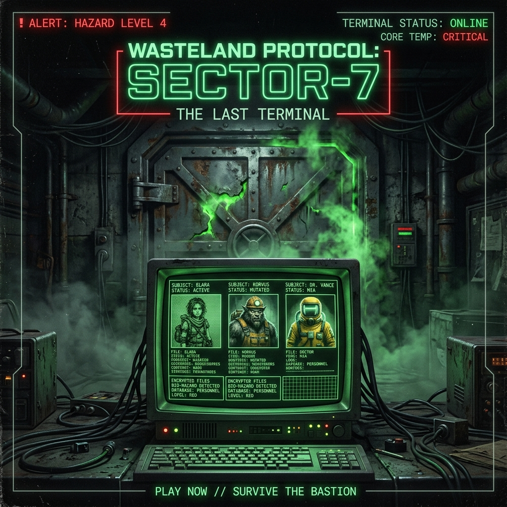

[SEKTÖR-7 EMRİ]: Her sığınmacının tırnak yapısını, göz rengini ve solunum hızını kontrol edin. Semptom gösterenleri derhal karantinaya alın. Hata yapma lüksünüz yok.
İçeri girmeye çalışanların hikayelerini dinle, belgelerini incele, çelişkileri yakala. Telsiz sorgulamaları yap ve ahlaki seçimler ver.
"Kapıdan giren tek bir yanlış kişi tüm sığınağı katledebilir. Doğru karar yok, sadece sonuçlar var. Kararların seni 8 farklı sondan birine götürecek."

Yalnız, gizemli bir çocuk. Sise karşı tuhaf bir bağışıklığı var gibi duruyor. Sığınağın geleceğinin anahtarı olabilir.
Vücudu yavaş yavaş mutant bir kurda dönüşen eski bir madenci. Sığınakta barındırılması büyük tehlike arz ediyor.
Salgını bitirebilecek antikoru taşıyan idealist bir doktor. Ancak komutanlığın onunla ilgili planları farklı.
Sisi yönlendiren ve insanlığı dönüştürmeyi amaçlayan "Proje Sıfır"ın ardındaki gizemli lider. Dışarıdaki orduları ve casusları yönetiyor.